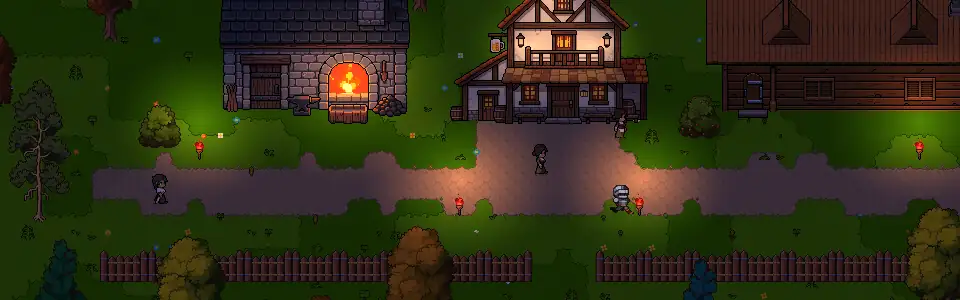

Diário de desenvolvimento
 Journal
Journal
Salva o mundo da ameaça de fantasia medieval do mago maligno.

Diário de desenvolvimento
Salva o mundo da ameaça de fantasia medieval do mago maligno.
Capítulo I

Só os pontos-chave do que o jogo já faz. Abre um capítulo para o ler.
Capítulo II

Capturas tiradas no próprio jogo, as mais recentes primeiro. Toca numa para a ampliar.
Capítulo III

O devlog por mês e por dia: os prompts e os commits do jogo.